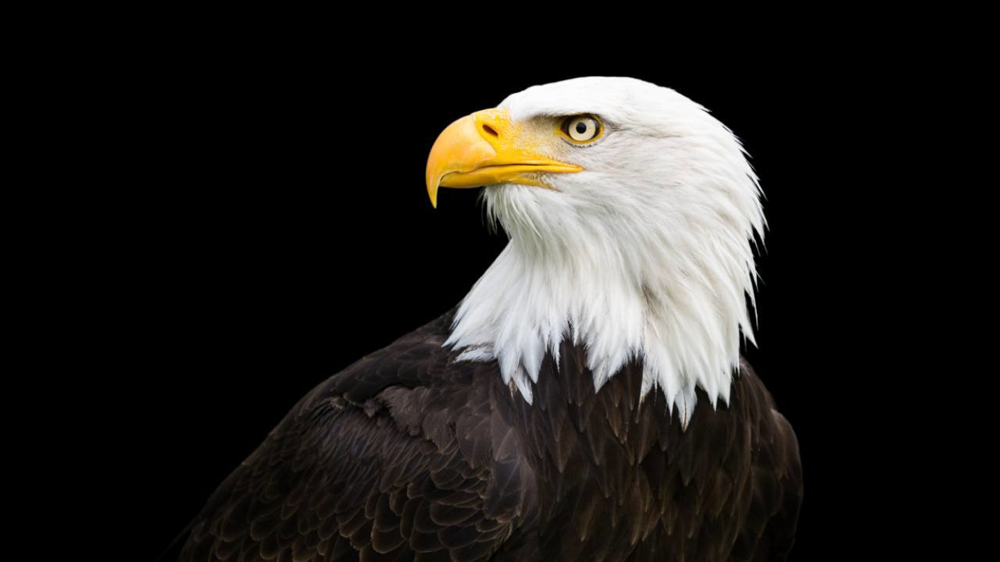
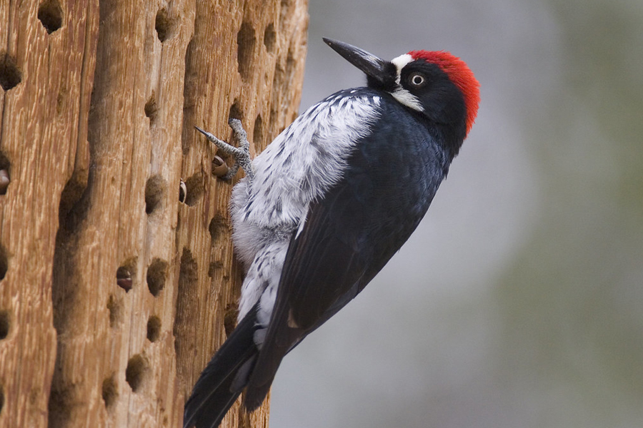
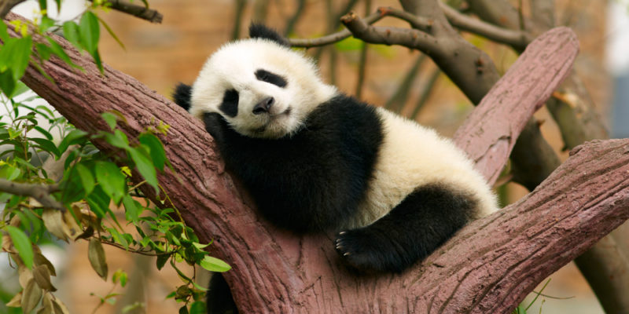

MI AVE PRINCIPAL ES:
El primer ave significa como me gustaría que me vieran

"El águila representa fortaleza, por esa razón la selecciono, me considero una persona que siempre lucha por lo que quiere."
Video más detallado para que puedas conocer las águilas
MI AVE SECUNDARIA ES:
El segunda ave significa COMO REALMENTE me veo

Video más detallado para que puedas conocer los pajaros carpinteros
MI MAMIFERO ES:
El mamifero significa COMO SOY realmente

"Porque el panda para mi representa esa parte sensible de mi persona"